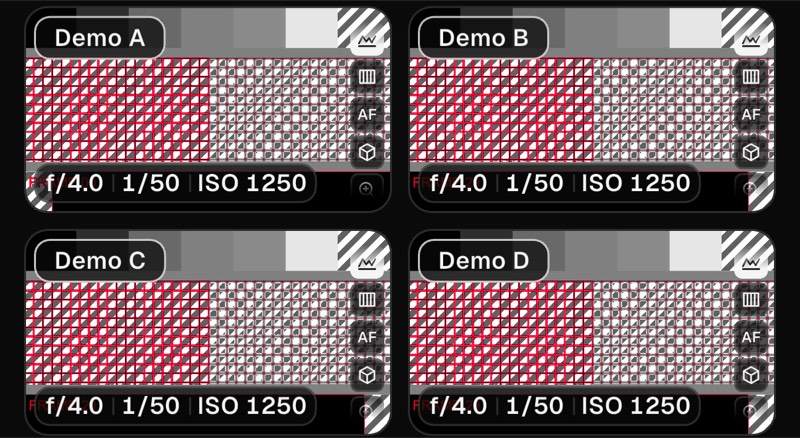
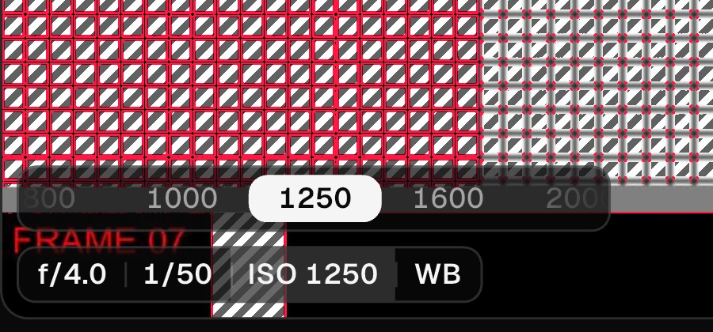

Bis zu vier LUMIX-Kameras auf deinem iPhone oder iPad überwachen
Das Livebild aller Kameras in einem Raster, Aufnahme auf allen mit einer Taste, Fokus-Peaking, Falschfarben, Zebra und LUTs – über das eigene WLAN der Kameras, ganz ohne Internet am Set.
Erste Schritte

1. Schalte an der Kamera die WLAN-Verbindung mit einem Smartphone ein (an der Kamera: Wi-Fi → Verbindung mit Smartphone).
2. Tippe in der App auf Kamera hinzufügen. Die App sucht die Kamera selbstständig: im persönlichen Hotspot deines iPhone, im eigenen WLAN der Kamera oder in einem Router, mit dem beide verbunden sind.
3. Tippe auf die gefundene Kamera. Beim ersten Mal fragt iOS nach dem Zugriff auf das lokale Netzwerk – erlaube ihn, denn darüber spricht die App mit den Kameras.
4. Manche Kameras bitten dich, die Verbindung auf ihrem Display zu bestätigen.
Eine Kamera lässt jeweils nur eine Steuerung zu. Schließe LUMIX Sync (und alle anderen Fernsteuerungs-Apps), bevor du dich verbindest.
Die Kameraliste
Jede gespeicherte Kamera hat einen Status: offline, verbindet und verbunden. Das Kettensymbol verbindet eine Kamera – auch wenn sie inzwischen in einem anderen Netzwerk ist, findet die App sie wieder. Das Kamerasymbol öffnet ihr Bild, die durchgestrichene Kette trennt die Verbindung.
Mit Bearbeiten benennst du Kameras um, entfernst sie und änderst ihre Reihenfolge – das ist auch die Reihenfolge der Kacheln im Raster. Gespeicherte Kameras können sich beim Start der App automatisch verbinden.
Das Raster und REC ALL

Alle verbundenen Kameras nebeneinander. Die rote Taste in der Mitte startet die Aufnahme auf jeder Kamera. Um alle zu stoppen, halte sie gedrückt – ein einfaches Tippen beendet nie eine Aufnahme. Eine Kamera, die aufnimmt, zeigt auf ihrer Kachel REC und die Zeit; ein roter Rahmen markiert sie.
Die App stoppt eine Aufnahme nie von sich aus: Bricht die Verbindung ab, wird das iPhone gesperrt oder geht die App in den Hintergrund, nehmen die Kameras weiter auf.
In der Leiste unter dem Raster findest du die Einblendungen und vier Fn-Tasten, die du selbst belegst. Unter Anzeige legst du fest, was die Kacheln zeigen: Kameranamen, Bildrate und Bildalter, Funktionstasten.
Bildeinblendungen und LUTs

Fokus-Peaking markiert scharfe Kanten, Falschfarben färben die Belichtungsstufen ein, Zebra legt Streifen über helle Bereiche. Jede Einblendung lässt sich für alle Kameras oder nur für einige einschalten (das kleine Etikett 1/4 zeigt, für wie viele); Farben und Schwellenwerte findest du in den Kameraeinstellungen.
Jede Kamera kann eine LUT (.cube) anzeigen, die vor den Einblendungen angewendet wird – eigene LUTs importierst du aus der App „Dateien“.
Die Einblendungen werten das Livebild der Kamera aus: eine komprimierte Vorschau dessen, was die Kamera zeigt. Nutze sie, um Fokus und Belichtung zu beurteilen, nicht als Messinstrument.
Eine Kamera: Fokus, Belichtung, Zoom

Tippe auf eine Kachel, um die Kamera im Vollbild zu öffnen. Tippe ins Bild, um den Fokuspunkt dorthin zu setzen. Die Leiste unten zeigt Blende, Verschlusszeit und ISO – tippe auf einen Wert und dreh am Rad, um ihn zu ändern. Zoom vergrößert das Bild 1,5- bis 4-fach, damit du den Fokus prüfen kannst.
Einstellungen
Sprache (Deutsch, Englisch, Polnisch, Spanisch), Design (Dunkel oder Sonne für helles Tageslicht), deine Lizenz und „Käufe wiederherstellen“, Hilfe sowie ein Diagnoseprotokoll, das du teilen kannst, wenn etwas nicht funktioniert. Die Tipps über der Kameraliste kannst du unter Einstellungen › Hilfe ausblenden und wieder einblenden.
Gratis und Pro
Eine Kamera ist kostenlos, mit allen Funktionen. MultiMonitor Pro ist ein einmaliger Kauf, der bis zu vier Kameras gleichzeitig freischaltet – ohne Abo. Auf einem anderen Gerät gekauft? Tippe in den Einstellungen auf Käufe wiederherstellen.
Kameras
Panasonic LUMIX-Kameras mit WLAN-Fernsteuerung. Getestet mit der LUMIX S5II / S5IIX; andere aktuelle LUMIX-Modelle mit demselben Fernsteuerungsprotokoll sollten ebenfalls funktionieren.
Fehlerbehebung
- Die Kamera wird nicht gefunden – prüfe, ob ihre WLAN-Verbindung mit einem Smartphone eingeschaltet und LUMIX Sync geschlossen ist. Wenn die Kamera den Hotspot deines iPhone nicht sieht, schalte dort Kompatibilität maximieren ein.
- Keine Verbindung – erlaube den Zugriff auf das lokale Netzwerk: iOS-Einstellungen › Datenschutz & Sicherheit › Lokales Netzwerk.
- REC schlägt mit „busy“ fehl – die Kamera ist in einem Menü oder in der Wiedergabe; schließe es an der Kamera.
- Klappt es immer noch nicht? Tippe unter Einstellungen › Hilfe auf Problem melden: Es öffnet sich eine E-Mail an uns mit der App-Version und den letzten Zeilen des Diagnoseprotokolls. Du kannst uns auch hier kontaktieren.
Demnächst
Umschalten zwischen AF und MF, AF-Modus und AF-Bereich, Weißabgleich-Voreinstellungen, Kamerastatus (Restzeit auf der Karte, Akku) und Fokusrahmen von der Kamera.